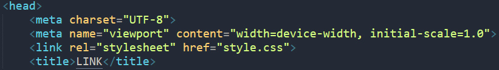

<link>: Элемент - ссылка на внешний ресурс
Элемент HTML - Ссылка на Внешний Ресурс (<link>) определяет отношения между текущим документом и внешним ресурсом. Этот элемент чаще всего используется для ссылки на stylesheets, а также для создания иконок сайта (как для иконок в стиле "favicon", так и для иконок домашних экранов и приложений мобильных устройств) среди прочего.
